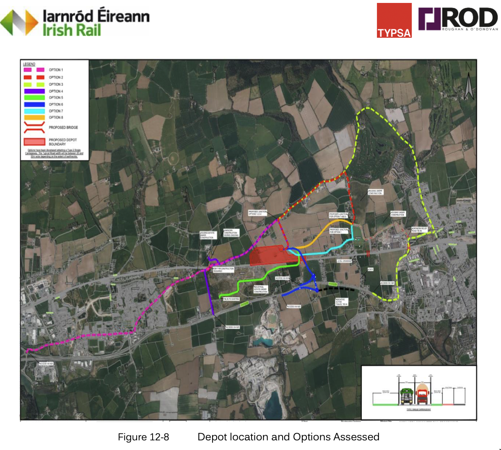
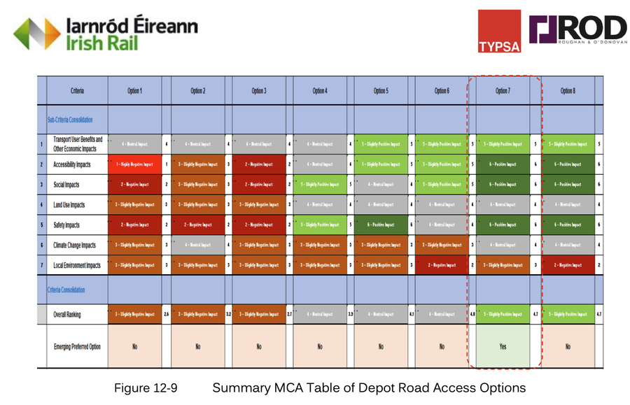
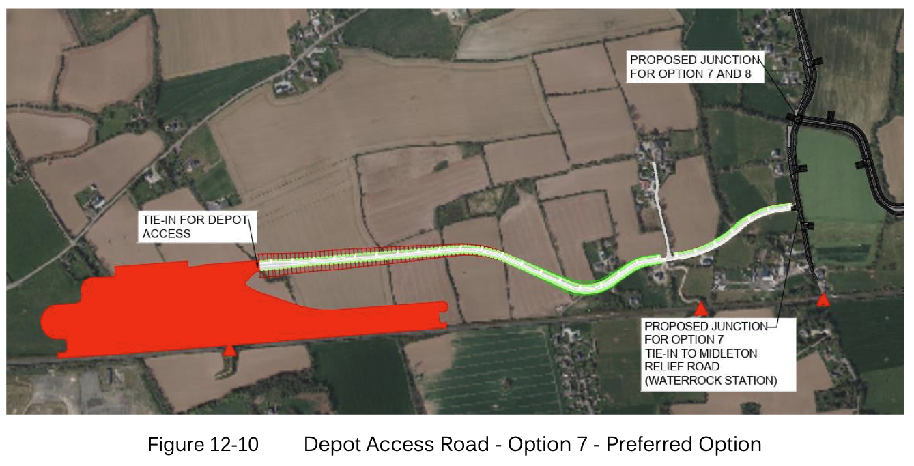

Irish Rail's preferred depot access route would destroy mature native oak and ash trees and cut a road through the gardens of local families. A better alternative exists. Please help us to stop it.
The Cork Area Commuter Rail Programme Phase 2 includes a new maintenance depot near Ballyrichard, east of Carrigtwohill. We support that. What we don't support is Option 7 — the proposed access road chosen to reach it.
Of eight options assessed, Irish Rail selected the route that causes the most harm to local residents. Option 7 would pass directly through private residential gardens, requiring the compulsory acquisition of garden land and the felling of mature native trees that have stood for generations.
Oak, ash and other native trees that provide wildlife habitat, shade and shelter for families and for nature would be permanently lost.
The access road would cut through the private residential gardens of multiple households — amenity built over decades, gone permanently.
This is not a public road or passenger access. It serves depot staff only. Destroying a neighbourhood for a staff entrance is disproportionate.
Irish Rail assessed eight options. Most avoid residential properties entirely. Irish Rail's own report admits Option 7 only "narrowly" beat other options. For example, Option 5 goes directly from the N25 through the IDA site, where a new bridge could bring workers directly to the depot, without impacting traffic or landowners.
The depot plans include 160 car parking spaces on the Carrigtwohill side. The depot will operate around the clock, requiring multiple shift changes throughout the day and night. Workers will travel the Waterrock Road and all approaches to reach them — significantly increasing traffic for local residents at all hours.
The depot's own drainage plans route a foul rising main along the access road to Castle Rock Avenue. Separately, large floodwater drain pipes from the new Waterrock estate are already being directed down Castle Rock Avenue into the small stream near Waterrock House. No flood impact study was carried out to assess the cumulative effect on Midleton — a town that has already suffered severe flooding.
We accepted the disruption of Phase 1 — night works, noise, construction traffic — because we believe in public transport. We are not opposing the depot. We are opposing one unnecessary decision that would destroy our neighbourhood when a better option is right there on the map.
These images are taken directly from Irish Rail's own PC2 Project Report (Section 12.2, November 2025). They show all eight options assessed and the scoring table Irish Rail used to choose Option 7.

The aerial map shows every route considered. Most alternatives avoid residential properties entirely. Option 7 (their proposed option) is highlighted in cyan — it runs directly through the gardens of local families.

The MCA table shows the scoring used to select Option 7. Irish Rail's own report says the margin between Option 7 and other options was only "narrow".

The route map shows Option 7 cutting through residential land to reach the depot. This is the route Irish Rail has selected as its preferred option.
The PC2 Project Report states: "Option 7 narrowly edges out Option 8 on Land Use Impacts and Local Environment Impacts. It is recommended that Option 7 be the Emerging Preferred Option."
A narrow margin decided a choice that permanently destroys residential gardens and mature native trees. We are asking Irish Rail to review that decision.
We have prepared a detailed technical analysis of Irish Rail's own documents, with direct quotations and page references. This includes evidence from an independent ecological survey confirming protected bat species and Red-listed birds in the Option 7 corridor — evidence not considered in Irish Rail's assessment.
Read the technical evidence →Yes — Irish Rail assessed eight options in total. Several of these would reach the depot without passing through any residential gardens. Irish Rail's own report acknowledges the margin between the chosen option and others was "narrow." We are asking Irish Rail to publish the full scoring for all options and to justify why a route through residential properties was selected.
The report states Option 7 was preferred on a narrow margin related to engineering factors. Engineering convenience should not override the destruction of residential gardens, the felling of mature native trees, and a significant increase in traffic on local roads serving residents around the clock.
No. We fully support new stations, electrification, and the new depot. Many of us accepted significant disruption during Phase 1 construction because we believe in public transport. We are objecting to one specific decision: the choice of route for a staff access road when a less harmful alternative was available and assessed.
Oak and ash are native Irish species. Their ecological value — as habitat for bats, nesting birds, and invertebrates — must be assessed before any felling is authorised. Felling during the bird nesting season (February to August) would be a potential breach of the Wildlife Act 1976. No published ecological survey of the affected trees has been made available.
No — it is not too late. We are currently at Public Consultation No. 2, which is non-statutory. The Railway Order application to An Coimisiún Pleanála has not yet been filed. This consultation period is specifically designed for the public to influence the design before it is locked in. The deadline for submissions is Friday 12 June 2026. You can read the full project details on the Irish Rail CACR page.
Irish Rail will prepare a PC2 Findings Report, then file a Railway Order application with An Coimisiún Pleanála. At that point there will be a further statutory consultation — but the design will be much more fixed. The best chance to change the access road route is now, at this PC2 stage.
Your submission will be sent directly to the CACR Project Team at Irish Rail. Every individual submission counts — Irish Rail is legally required to log and respond to each one. It takes two minutes.
Select the points you want to make, add your name, and click Send. Your email app will open with a ready-to-send message addressed to CACR@irishrail.ie. Alternatively, fill out the feedback form on Irish Rail's website.